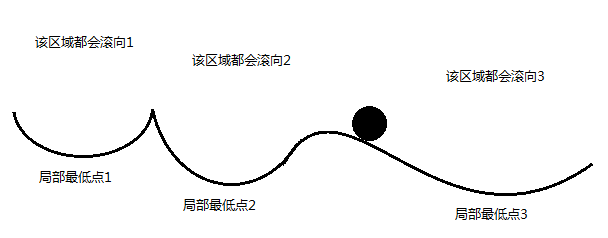
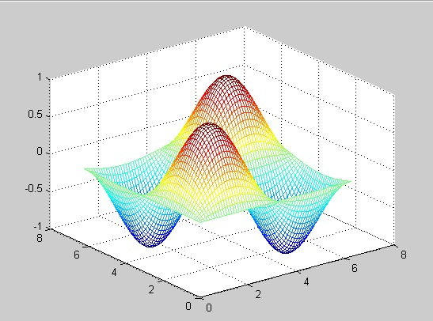
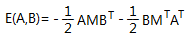
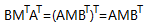
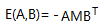
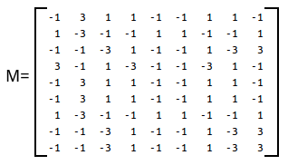
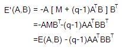

在《双向联想存储器BAM（一）——概述》一文中就提到过，向BAM存入(A1,B1)、(A2,B2)……(An,Bn)，如果A1、A2……An是正交的，那么就能完美地取出对应的B1、B2……Bn。可是，我们后面所有的实验，都没有保证输入的Ai是正交的呀，可是为何还是能够完美取出Bi呢？
================阶段一：“最低能量点”的世界观================
这里面就涉及到一个叫做“最低能量点”的概念。在自然界中，任何系统都会尽量让自己的能量降到最低——高温物体会冷却、高处的物体会坠落等等。在一个动力学系统中，一个物体会沿着势能减小的方向运动，比如下图中的小球：

该小球会继续向右边滚动。如果忽略小球的惯性，或者假设阻力很大，那么小球滚动到局部最低点3就会停止。这是二维空间中的情况，在三维空间中，比如下图，

那么如果有一个小球，它就会滚入左边或右边某个局部最低点。
其实在BAM中也是如此。如果一对数据能够被存储在局部最低点，并且给定的有噪音或者畸变的输入数据是在那个局部最低点的“势力范围”内，那么就能够保证多次迭代以后，能够得到正确的数据。红色部分的那两个条件缺一不可！仍以下图为例，
（1）如果数据被存储在局部最低点1，但是小球被放置在局部最低点3的势力范围内（正如图中所示），小球最终不可能停在局部最低点1，即正确数据所在；
（2）如果数据被存储在局部最低点3的旁边（但不是局部最低点3），小球在局部最低点3的势力范围内（正如图中所示），小球最终停留在局部最低点3，但是却不是数据所在。
由于BAM的维度通常很高，所以无法用图片画出，至少我们这些生活在低维度空间的生物是无法画出来的，所以只能类比一下了。
===================阶段二：BAM中能量定义=================
OK，理解了“最低能量点”的思想，就可以来具体看看BAM中的关于能量的定义了。
设BAM的权值矩阵为M，对于任一对联想(A,B)，其能量定义为：

该函数也称为李氏函数（Lyapunov Function）。而其中，

第二个等号之所以能成立，是因为AMBT是一个标量，而标量的转置依旧是其自身。
所以，能量函数可以简化为：

而且是一个标量。
===============阶段三：BAM不一定把数据放在能量最低点============
让我们来看一个例子。假设有一个9*9的BAM，需要存入如下内容：
A1=(100111000)，B1=(111000010)
A2=(011100111)，B2=(100000001)
A3=(101011011)，B3=(010100101)
先转换成双极形式，如下：
X1=(1 -1 -1 1 1 1 -1 -1 -1)，Y1=(1 1 1 -1 -1 -1 -1 1 -1)
X2=(-1 1 1 1 -1 -1 1 1 1)，Y2=(1 -1 -1 -1 -1 -1 -1 -1 1)
X3=(1 -1 1 -1 1 1 -1 1 1)，Y3=(-1 1 -1 1 -1 -1 1 -1 1)
然后，计算出权值矩阵：
M=X1TY1+X2TY2+X3TY3
得到

假设需要用A2取出B2，那么X2M=(5 -19 -13 -5 1 1 -5 -13 13)，得到Y’=(1 -1 -1 -1 1 1 -1 -1 1)，也就是B’=(100011001)，并不是B2。
如果把上述的B’代入BAM去得到A，那么就是Y’MT=(-1 1 11 55 -11 -11 11 55)，得到X=(-1 1 1 1 -1 -1 1 1 1)，也就是A=(011100111)=A2。
于是奇怪的事情就是，把A2代入，稳定点并不是(A2,B2)，而是(A2,B’)。
这是为什么呢？答案可以用最低能量点来解释：
E(X2,Y2)=-X2MY2T=-71
E(X2,Y’)=-X2MY’T=-75
看来在(X2,Y2)附近有一个点(X2,Y’)能量更低，难怪无法正确取出。
=================阶段四：通过多次训练以改进==============
如何才能解决这个问题呢？
人脑通过多次记忆学习某样东西，能够加深印象，那么BAM是否可以呢？答案是肯定的！让BAM对同一对数据多次记忆，就能够加强BAM对这一组数据的回忆能力。表现在数学上，就是在该对矩阵乘机之前在乘以一个系数。
仍以阶段三中的例子为例，既然(A2,B2)无法记住，那么就让BAM把(A2,B2)记两次，于是权值矩阵就成了：
M=X1TY1+2*X2TY2+X3TY3
即
此时，将X2代入，X2M=(14 -28 -22 -14 -8 -8 -14 -22 22)，即Y’=(1 -1 -1 -1 -1 -1 -1 -1 1)，得到B=(100000001)=B2，
再把B2代入，Y2MT=(-16 16 18 18 -16 -16 16 18 18)，即X’=(-1 1 1 1 -1 -1 1 1 1)，得到A=(011100111)。
因此，训练2次之后，BAM成功记住了(A2,B2)。
等等，貌似(A1,B1)却被遗忘了！来看一下：
X1M=(-6 24 22 6 4 4 6 22 -22)，即Y’=(-1 1 1 1 1 1 1 1 -1)，得到B=(011111110)，不等于B1。
这是为什么呢？解释很简单：人在多次学习某样知识时，也可能忘记其他的知识呀~~~
那怎么办？很简单，再回头去复习一遍！所以，BAM中，也可以对那些被影响的数据再次加深记忆，比如(A1,B1)也训练2遍：
M=2*X1TY1+2*X2TY2+X3TY3
这样之后，三对数据就都能被回忆出来啦！
====================阶段五：多次训练的原理====================
虽然类比于人类的记忆过程，多次训练法很好理解，但是，怎么从数学的角度解释这件事呢？
假设我们把(A,B)的训练次数从1增加到q，那么(A,B)处的能量就从原来的

变化为

其中，AATBBT是一个标量，而且必为非负数（因为AAT的结果就是A中各个元素的平方和，BBT亦然）。因此，通过增大q，可以使得该点的能量降低到任意小。或者形象地说，可以挖一个任意深的坑。
不过，对某个数据对增强训练强度后，带来的问题是会影响编码进M的其他联想对处的能量，所以常采用q的最小值即q=2来进行多重训练，以尽可能减少这种影响。
也可以对多个数据对都进行多重训练，直到结果满意为止，或者发现无法让所有数据都完美存入。目前，尚不清楚多重训练次数对最终结果的的影响遵循什么规律。